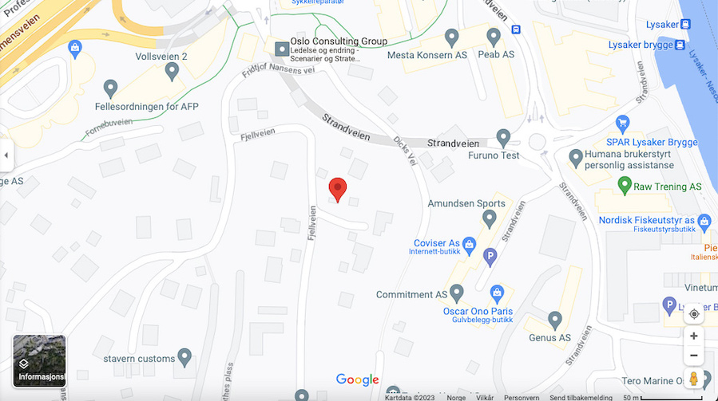
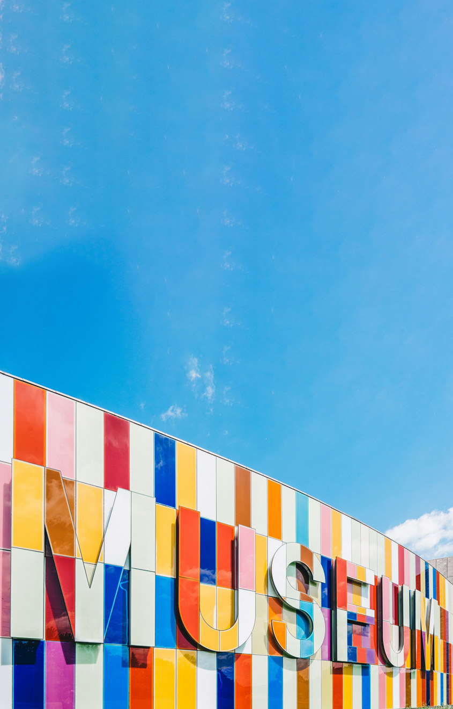
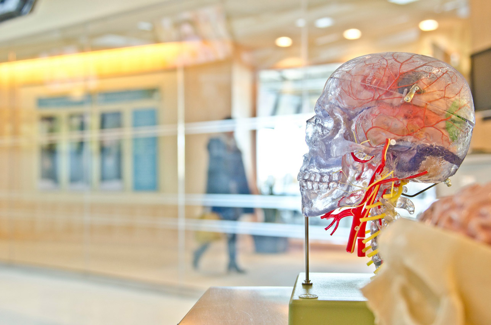

Location
The museum is located at Fjellveien 27, 1366 Lysaker
Hours
Monday: Closed Tuesday: 10:00 - 16:00 Wednesday: 10:00 - 16:00 Thursday: 10:00 - 16:00 Friday: 10:00 - 19:00 Saturday: 9:00 - 16:00 Sunday: 9:00 - 13:00
Accessibility
The museum has wheelchair accessibility ramps. It also has audio guides and braille display signs for the visually impaired.
Admission
The entrance is free for all. There are guided tours of the museum that leave every hour. These tours are 70 NOK per person and include a handy printed guide of the museum. If you would like to organise a guided tour for your group of 6 or more people, please contact us to arrange the tour.
Shop
Our shop offers a range of memorabilia from the museum as well as great gifts and activity packs that allow you to continue to explore science even after you've left the museum. There is also a café attached to the museum where you can get light lunches, soft drinks, coffee, snacks and more.